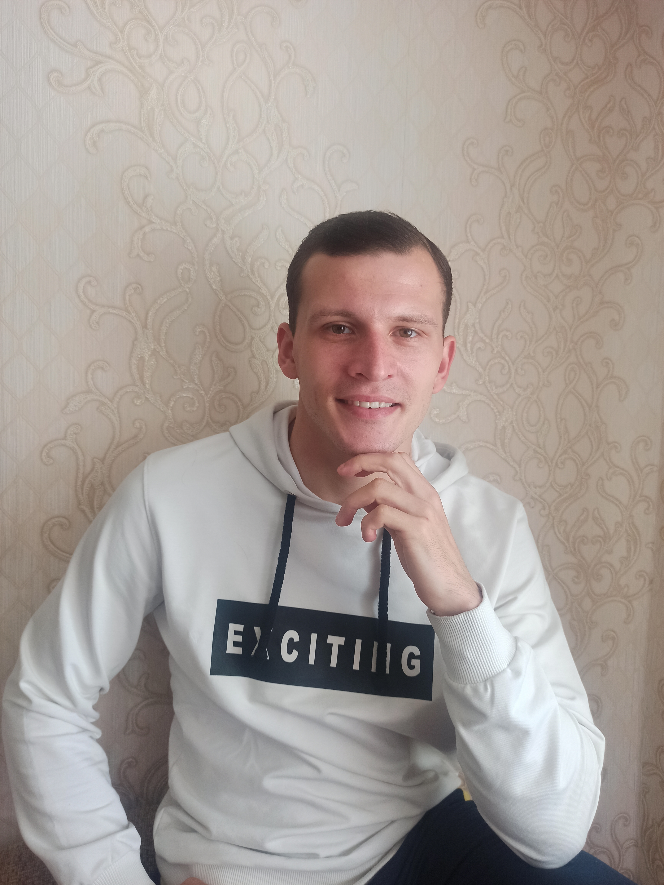

Це я, звати мене Володимир
Трохи про мене!
Розповім про себе, можу сказати що я дуже дисциплінована людина та здібний начатися новому.
Не маю шкідливих звичок, так як я люблю займатися спортом та вивчати іноземні мови у вільний час.
Досить давно зацікавлений ІТ сферою, а саме "Версткою".
Ця зацікавленість виникла в мене близько одного року тому,
коли я вперше завітав на канал "Фрілансер по Життю".
Освіта
Закінчив у 2019 році коледж та здобув кваліфікацію.
Закінчив у 2022 році Національний технічний університет "Дніпровська політехніка".
Зараз навчаюсь в магістратурі, а також на найкращому курсі по Верстці.
Про навики
Навички які я хотів би опанувати на професійному рівні:
- HTML
- CSS
- SCSS
- Methodology BEM
- Git
- JavaScript
Навички про які я хотів би дізнатись більше:
- Python
- WP
- React
- jQuery
Мої хоббі:
- Вмію малювати та грати на пианіно.
- Люблю займатися спортом. Біг як сенс життя.
- Вивчаю у вільний час иноземні мови.
- Обожнюю вивчати щось нове.
- Та багато іншого...
Взагалі я люблю багато чим займатися, як вище написано, але те що я дуже люблю робити це:
Верстати та тацювати.
В мене навіть є своя танцювальна команда!